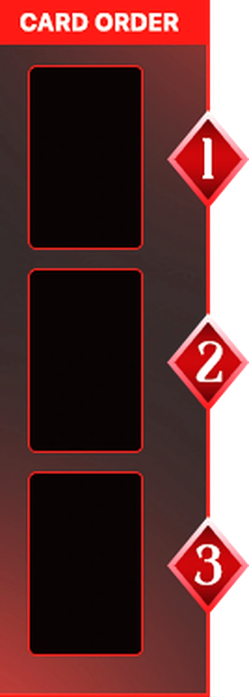
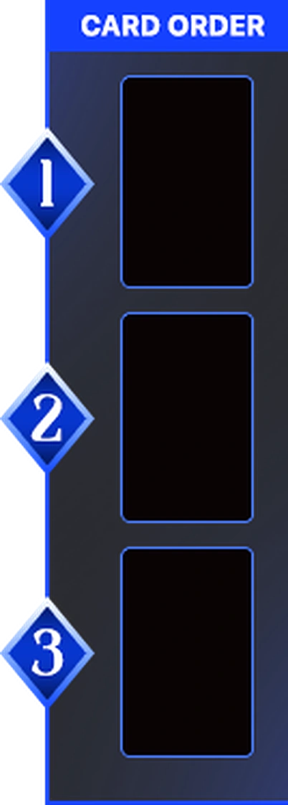

RED VS BLUE · CARD BATTLE
คุณคือ RED ดวลกับบอท BLUE · HP คนละ 100 · ทุกรอบจั่ว เก็บ แล้ววางการ์ด 3 ใบลงแผง CARD ORDER จากนั้นเปิดปะทะทีละช่อง ใคร HP หมดก่อนแพ้
LOBBY
PVP · ONLINE
กำลังเชื่อมต่อ…
กด READY ฝั่งที่ต้องการ แล้วรออีกฝ่ายกดอีกฝั่ง · พร้อมทั้งคู่ = เริ่มเกมทันที · เก็บ/วางการ์ดเฟสละ 60 วินาที · ใครกดยืนยันก่อน เวลาอีกฝ่ายเหลือ 30 วินาที · หมดเวลา = ยืนยันให้อัตโนมัติ